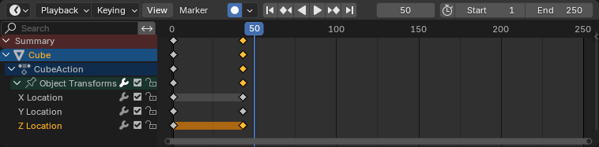
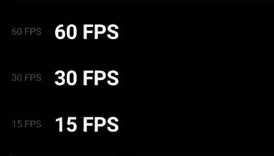

Tema 4: Linea de tiempo y animación 3D
La animación 3D es el arte de darle
movimiento a modelos tridimensionales. Esto
puede ir desde una simple rotación hasta una
escena completa de un personaje corriendo,
hablando o expresando emociones.
Para controlar ese movimiento, se utilizan dos
herramientas esenciales: la línea de
tiempo y los
keyframes.
Línea de Tiempo (Timeline):
- La línea de tiempo es donde se organiza todo lo
que ocurre en una animación, segundo a segundo o
cuadro a cuadro. Es como una regla dividida en
pequeños bloques (llamados fotogramas), y cada
uno representa una fracción de segundo.

- En un video típico, hay 24 o 30 fotogramas por segundo (fps). 
-
Si querés animar algo que dura 2 segundos a 30 fps, vas a tener 60 fotogramas en la línea de tiempo.
Desde allí se controlan cuándo ocurren los movimientos, cuánto duran y cómo se relacionan entre sí.
- 🟡 Keyframes (Fotogramas
clave):
Los keyframes son los puntos importantes que definen un cambio de estado en la animación. Es como decirle al programa: “En el fotograma 1, el personaje está quieto, y en el fotograma 30, está levantando el brazo.” El software se encarga de interpolar (o rellenar automáticamente) los movimientos entre esos dos keyframes, generando una transición suave. Ejemplo sencillo:- Fotograma 1: la esfera está en el suelo.
- Fotograma 60: la esfera está en el aire.
Tipos de Keyframes:
- Posición: Cambia la ubicación del objeto
- Rotación: Cambia la orientación del objeto
- Escala: Cambia el tamaño del objeto
- Tambien se pueden usar para expresiones faciales, movimientos de cámara o cambios de iluminación.
¡Llegaste al final del curso! Estás listo para tomar el exámen?